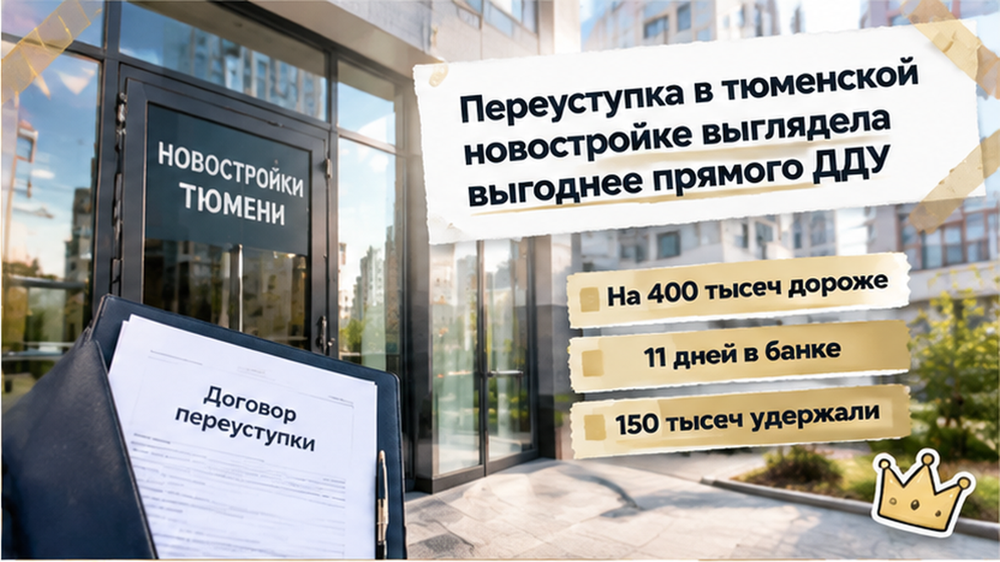
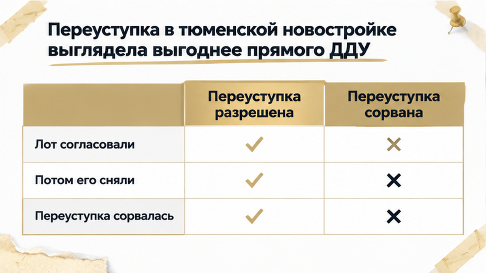
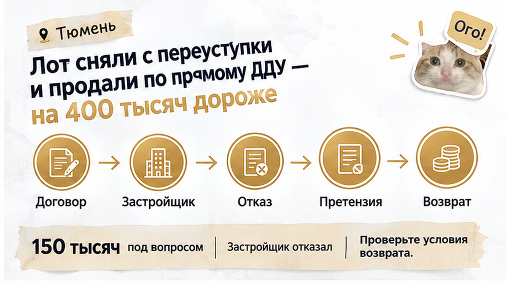
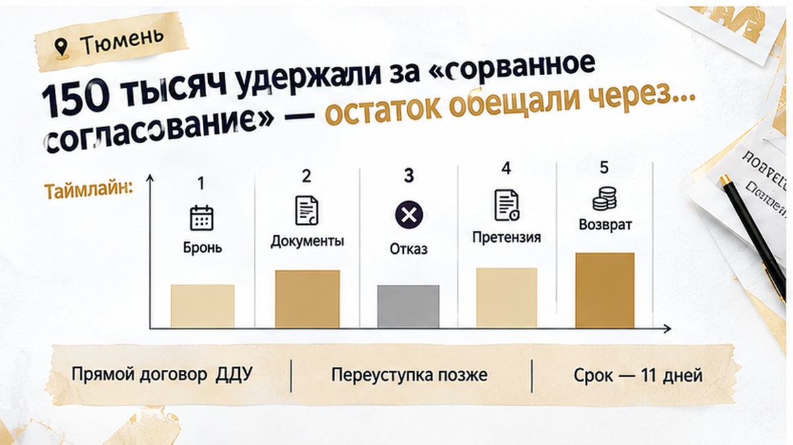
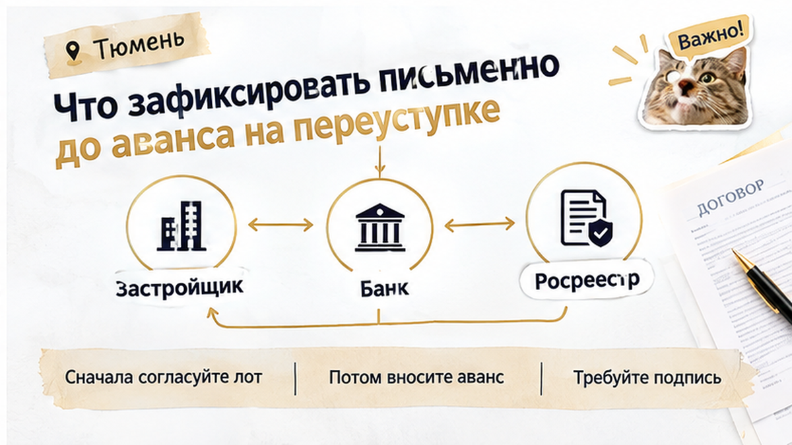

В Тюмени инвестор одиннадцать дней ждал ипотеку по переуступке — и потерял выбранный лот: застройщик снял квартиру из блока уступок, пока банк собирал документы. Он уже внёс 150 тысяч за согласование и сопровождение, получил в переписке фразу «лот согласован» и передал пакет в банк. Но пока договор уступки не подписан и не зарегистрирован, квартира ещё не стала его правом. В итоге объект ушёл другому покупателю по прямому ДДУ, а деньги вернули не полностью и не сразу.

Покупателю предложили не обычную покупку у застройщика, а переуступку: первоначальный участник передаёт новому покупателю своё право требования по уже заключённому ДДУ.
Цена казалась выгодной — ниже той, по которой застройщик мог выставить квартиру напрямую. Ради этой разницы покупатель был готов пройти банковскую проверку, собрать документы и дождаться оформления.
Но переуступка — это не разговор в офисе и не обещание менеджера придержать лот. Это договор, который нужно подписать и зарегистрировать. Только после этого новый покупатель становится участником сделки.
До регистрации бронь, платёж и переписка показывают, что стороны начали двигаться к сделке, но не обязательно закрепляют квартиру окончательно. Значение имеют срок брони, условия возврата денег, порядок согласования и документы, поданные на регистрацию.
Пока банк собирал пакет, покупатель уже вложил деньги и время, но юридически ещё не получил право требования. Выбранный лот оставался в зоне риска.

В офисе обсудили конкретную квартиру и порядок сделки. В переписке появилась фраза «лот согласован». Для покупателя это звучало как разрешение на переуступку: квартира выбрана, осталось пройти банковскую процедуру.
После этого внесли бронь или депозит, а документы передали в банк. Тот должен был проверить исходный ДДУ, переуступку и цепочку перехода права. Для ипотеки на переуступку бумаг обычно больше: нужно понять, кто уступает право, что уже оплачено по ДДУ и нет ли препятствий для регистрации.
Так возникло ощущение, что сделка уже запущена и задержка носит технический характер. Но бронь не равна регистрации, а согласование не всегда означает обязанность держать лот до определённой даты.
В письменных условиях должно быть указано, что именно забронировано — номер квартиры или помещения, корпус, этаж, площадь и цена, — а также срок брони и право застройщика изменить статус лота до подписания и регистрации уступки.
Иначе одна и та же фраза работает по-разному: покупатель слышит обещание сохранить квартиру, а продавец может считать, что подтвердил лишь возможность продолжить переговоры.
Банк не отказал покупателю, а собирал документы и проверял цепочку сделки. На это ушло 11 дней — всё это время покупатель уже потратил деньги и силы, но ещё не мог считать квартиру своей.
Пока шла проверка, срок брони подходил к концу, а документы не были готовы к подаче на регистрацию. Письменного подтверждения, что квартиру будут удерживать на весь этот период, у покупателя не было.
Здесь офисная формулировка разошлась с защищённой договорённостью. Менеджер мог считать лот согласованным на текущем этапе, а покупатель — понимать это как обещание сохранить его до финала ипотеки. Когда срок и последствия задержки не прописаны, одна переписка допускает разные трактовки.
Даже одобрение кредита на переуступку не означало перехода права. Впереди оставались договор уступки и регистрация, а пока покупатель ждал, застройщик мог изменить статус лота.
Через одиннадцать дней покупатель снова связался с офисом продаж. Квартиры, которую обсуждали как переуступку, в прежнем статусе уже не было: лот сняли с этого направления и выставили по прямому ДДУ — примерно на 400 000 ₽ дороже.
Покупатель уже передал документы в банк, дождался проверки ипотечной сделки и внёс деньги за начатое согласование. Но договор уступки ещё не зарегистрировали, поэтому право требования на квартиру к нему не перешло.
В офисе отказались оформить лот на прежних условиях. Фраза «лот согласован» осталась в переписке, но в ней не было главного: на какой срок квартиру закрепили, что именно обязался сохранить застройщик и что произойдёт, если банк не успеет закончить проверку.
Такое сообщение может подтверждать переговоры, но не всегда заменяет договор. Его смысл зависит от условий брони, оферты, соглашения о сопровождении и других документов. Если конкретный срок и обязанность удерживать объект не указаны, покупатель рискует понять слово «согласован» шире, чем его готов подтвердить продавец.
Переуступка была выгоднее прямой покупки именно из-за цены. После смены статуса лота покупателю пришлось бы заново проходить банковскую процедуру и искать дополнительные 400 тысяч рублей. На это он не пошёл.
Похожая путаница возникает, когда в договоре есть запрет на последующую перепродажу переуступки. Это отдельное условие, которое проверяют до внесения денег: ограничение на перепродажу в переуступке не то же самое, что снятие лота из предложения.

После того как квартира исчезла из переуступки, встал вопрос о внесённых деньгах. Застройщик согласился вернуть сумму не полностью. 150 000 ₽ удержали, назвав их платой за согласование и сопровождение сделки, а остаток пообещали перечислить через три недели.
Получилась неприятная связка: покупатель лишился выбранного лота, получил разницу между прежней и новой ценой и при этом не смог сразу забрать все деньги, которые уже передал.
Само название платежа ничего не решает. Нужно смотреть документ, на основании которого вносились деньги: соглашение о бронировании, депозит, договор сопровождения, оферту или другой текст. В нём должны быть понятны назначение платежа, условия отказа, порядок возврата и основания для удержания.
Нельзя по одному слову «сопровождение» заранее сказать, законно ли удержание. Бронь и согласование показывают, что переговоры шли всерьёз, но не заменяют зарегистрированную уступку и не делают покупателя новым участником долевого строительства.
В итоге цепочка оборвалась: лот согласовали, деньги внесли, документы передали в банк, а затем квартиру вывели в прямую продажу. За начатую процедуру удержали 150 тысяч, а возврат остальной суммы отложили.
Если застройщик снял переуступку и продал квартиру дороже, вы бы судились за удержанные 150 тысяч или сразу искали другой лот?

До перевода денег важно получить не общее «лот согласован», а документ, привязанный к конкретной квартире. В нём должны совпадать номер помещения, корпус, этаж, площадь, цена и вид сделки — именно переуступка права требования по ДДУ, а не будущая прямая покупка у застройщика.
Отдельно проверьте срок брони и последствия задержки банковской проверки или приостановки регистрации: сохраняется ли квартира за покупателем, может ли застройщик изменить её статус и кто обязан об этом предупредить. Ответ по телефону лучше продублировать письменно — с номером квартиры, ценой и сроком.
До аванса стоит запросить:
У застройщика нужно выяснить текущий статус квартиры: это переуступка, забронированный лот, прямая продажа или предложение, которое компания может изменить. Полезно также проверить по ДДУ обременение, задолженность, предыдущую уступку и ограничение на дальнейшую перепродажу. Например, запрет на перепродажу может обнаружиться уже после внесения денег.
При ипотеке банк смотрит не только на доход покупателя и размер кредита. Ему нужны ДДУ, история оплаты, документы первоначального дольщика и подтверждение статуса сделки. Если бумаги начинают собирать уже после брони, срок зависит сразу от нескольких участников, а квартира всё это время может оставаться незакреплённой. В другой ситуации проблема возникает из-за изменения ипотечного платежа незадолго до подписания: банк дорабатывает заявку, пока срок брони не остановлен. С эскроу связан отдельный риск, когда счёт не открывают после одобрения: ипотеку одобрили, а эскроу не открыли.
Смысл проверки не в том, чтобы отказаться от переуступки в Тюмени. Нужно заранее оставить себе возможность остановить перевод денег, если статус квартиры не подтверждён документом, срок брони не указан, а правила возврата можно трактовать как угодно. Если письменного ответа нет, это не повод отказываться от новостройки вообще — это повод не переводить аванс, пока не проясните условия.
До аванса закрепите предмет договорённости: какая квартира забронирована, до какой даты, кто отвечает за документы и сколько вернут при остановке сделки. Проверка статуса лота занимает меньше времени, чем повторное одобрение ипотеки и спор о деньгах после исчезновения квартиры из блока переуступок. Если застройщик меняет порядок сделки, новые бумаги читают до нового платежа: смена юрлица в цепочке ДДУ — отдельная проверка, не автоматическое «подпишите».

Материал не заменяет индивидуальную юридическую консультацию.